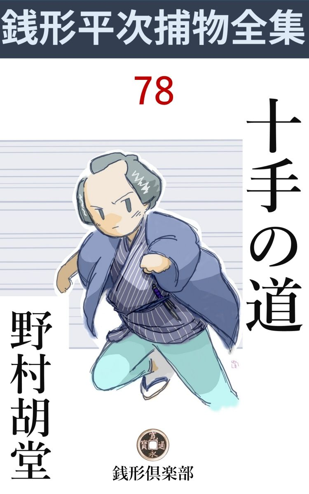
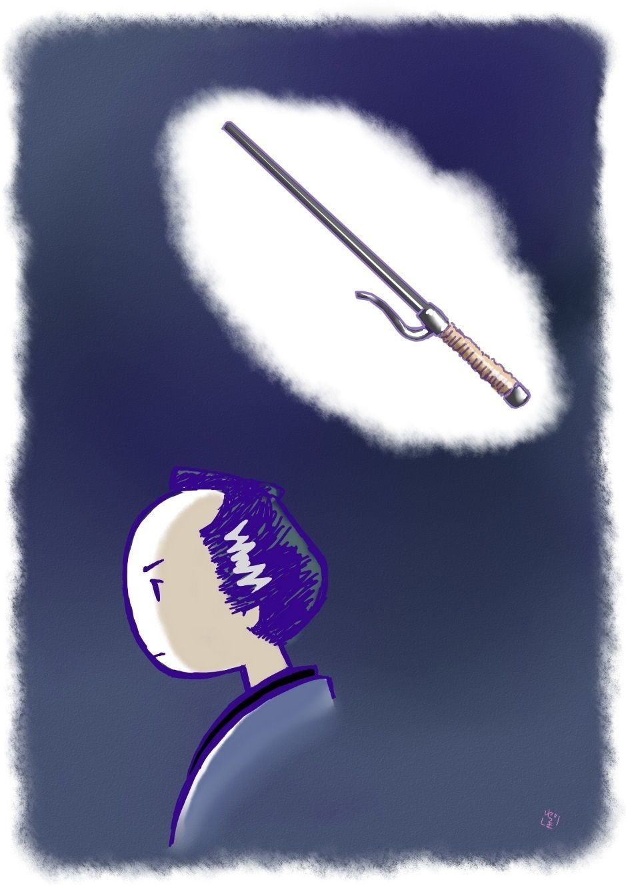

| 十手の道: 銭形平次捕物全集第78話 (銭形倶楽部) | |
| 野村胡堂 | |
| ZENIGATA CLUB (2018) | |

一
「親分、このお二人に訊いて下さい」
いけぞんざいなガラッ八の八五郎が、精いっぱい丁寧に案内して来たのは、武家風の女が二人。
「私は加世 と申します。肥前島原の高力 左近太夫 様御家中、志賀玄 蕃 、同苗内匠 の母でございます。これは次男内匠の嫁、関と申します」
六十近い品の良い老女が、身分柄も忘れて岡っ引風情の平次にていねいな挨拶です。
後ろに慎 ましく控えたのは、二十二三の内儀、白粉も紅も抜きにして少し世帯 崩 れのした、------若くて派手ではありませんが、さすがの平次もしばらく見惚れたほどの美しい女でした。
「承わりましょうか。私は町方の岡っ引きで、御武家の内証 事 に立ち入ることは出来ませんが、八五郎から聴くと、たいそう御気の毒な御身分だそうで------」
平次は静かに老女の話を導 きました。
肥前島原の城主高力左近太夫高長は、嘗 て三河三奉行の一人、仏 高力 と呼ばれた河内守清長の曽孫で、島原の乱後、ぬきんでて鎮 撫 の大任を命ぜられ、三万七千石の大禄を食 みましたが、『その性狂暴、奢 侈 に長じ、非分の課役をかけて農民を苦しめ、家士を虐待 し、天草の特産なる鯨 油 を安値に買上げて暴利を貪 り』と物の本に書き伝えてある通り、典型的な暴君で、百姓怨 嗟 の的となって居るのでした。
「伜玄蕃はそれを諫 め、主君の御憤 りに触れてお手討になりました。それも致し方はございませんが、こんどは次男内匠の嫁、これなる関に無体のことを申し、世にあるまじき御仕打が重なります。あまりの事に我慢なり兼ね、伜に勧めて主家を退転、明神裏に浪宅を構え、世の成行く様を見て居りましたところ------」
老女はここまで話すと、襲われたように、ゴクリと固唾 を呑みます。
「御次男内匠様が二三日前から行方知れずになった------とこう仰しゃるのでしょう」
平次はもどかしそうに、八五郎から聴かされた筋を先潜りしました。
「左様でございます。元の御朋輩衆 、川上源左衛門、治太夫御兄弟に誘 われ、沖釣に行くと申して出たっきり戻りません」
「川上とやら言う方に、お訊ねになったことでしょうな」
「翌る日すぐ、西久保屋敷まで参り、川上様にお目にかかり、根ほり葉ほり伺いましたところ、伜は腹痛がするから帰ると言って、船へも乗らずに、芝浜の船宿で別れたっきり、その後のことは何にも知らないという口上でございます」
「------」
「釣 に誘っておいて、どこへ連れ出したことやら------、川上様御兄弟は、殿の御覚えもめでたく、日頃は伜と口をきいた事もないような方でございます。それが、浪々の身になった伜を誘って、釣に行くというのからして腑に落ちません、------大 方 ？」
「------大方？」
「お屋敷につれ込まれて、御成敗------を」
「あれ、母上様」
言ってはならぬ事を言った加世は、嫁のお関に袖を引かれて、そっと襟をかき合せます。
「日頃お憎しみの重なる伜 、どんな事になるやら、心配でなりません。------その上、殿様には、二三日中に江戸御発足、御帰国と承わりました。せめてその前に伜の安否だけでも知りたいと思い、嫁と二人、三日二た晩、夜の目も寝ずに心配いたしましたが、年寄や女では、何の思案も手 段 もございません」
「------」
「伜内匠 は、今となっては志賀家の一粒種、その命を助けたいばかりに、主家を退転いたしました。それもみな無駄になりました」
老女は涙こそ流しておりましたが、母性の権化の様な、強大な意志の持主でした。主家を退転して三万七千石の大名に楯 突 いてまでも、志賀家の血筋を護り通そうとするのでしょう。
「お屋敷へ申出でましたところで、剛直 な方は斬られ黜 けられ、残るは弁 佞 の者ばかり。私風情の訴訟を、真面目に取次いでくれる方もございません。幸い浪宅の家主が、八五郎殿のお知合と申すことで、不躾 ながらその縁にお願いに参りました。伜が何処にどうして居りますことやら、せめてその様子だけでも知りとうございます」
気丈らしい老母加世も、打ち明けて話した気の緩 みに、畳の上に双 手 を突いたまま、ポロポロと涙をこぼすのです。
「------」
平次は黙って腕を拱 きました。岡っ引が飛出すにしては、少々相手が悪かったのです。
「君御馬前に討死するとか、武士の意気地で死ぬことなら、私は嘆きも怨みもいたしません。兄玄蕃 を殿様御手に掛けられた上、弟内匠まで------配 偶 のことで斬られるようなことになっては、志賀家代々の御先祖にも相済みません」
こう言う老女の背後 に、お関は消えも入りたい風情でした。三万七千石を賭けた美しさが、どんなにやつしても隠し切れないのを、平次は世にも不思議な因縁事のように見て居たのです。
「私共の掛り合う事じゃございませんが、お話を承わった上は、お気の毒で見ぬ振りもなりません。どんな事になるかは解りませんが、とにかく一応当って見ましょう。内匠様とやらがまだ御無事でいらっしゃれば、------事と次第によっちゃ、何とかならないこともないでしょう」
平次はツイこんな取返しの付かぬ事を言ってしまったのでした。唯の二本差でさえ手の付けようのない岡っ引風情が、大名を相手に、いったい何をしようと言うのでしょう。
「それでは平次殿、お願い申します」
いそいそと立上がる女二人。
「何かの心得に伺っておきますが、内匠様、御年輩、御様子は？」
「取って二十七、細面 の、髯 の跡の青い、------そうそう、主君左近太夫様によく似て居ると申されます」
高力藩第一の美男------とは、さすがに母の口から言いません。が、何かしら平次は、そんなものを感じました。
二
「八、大変なものを引っ張って来やがったな」
女二人を路地の外に見送って、平次は苦い顔をしました。
「そう言わずに、何とかしてやって下さいよ、親分。志 賀 内匠 というお武家は、まだ年は若いが、それはよく出来た方だ、それにあのお内儀が------」
「綺麗だから一と肌脱いでくれは厭だよ。俺はそんなさもしい料簡方は大嫌いだ」
「そんな気障 なことは言やしません。綺麗なのは皮一重だが、あの内儀は心の底からの貞女だ」
「大層悟 りやがったな、八」
「へッへッ、先 ずざっとこんなもんで」
「巫山戯 るなよ、馬鹿野郎。菊石 で眇目 だった日にゃ、貞女だって石 塔 だって、担ぐ気になる手前 じゃあるめえ」
「先ずそんなところで」
「呆れた野郎だ」
そんな事を言いながらも、平次は手早く支度をして、あまり近くもない西久保へ出向きました。
高力左近太夫は、若くて無法で、界隈でもさんざんの評判でした。春参府の折も、松平大膳大夫の領内防州 小郡 の湊 から上陸し萩城を一覧する所存で、一の坂を越え、蟹 坂 までノコノコやって行ったところを毛利の家中に発見され、生捕って江戸表へ訴え出、何彼の下知を待とうと犇 めかれて、あわてて元の小郡から海へ逃出した例があります。
その道、どんな料簡か、芸州広島城も見る積りでしたが、浅野の家中に騒がれてこれも果さず、散々の体で江戸表へたどり着いたという、馬鹿馬鹿しい経験を持っている左近太夫だったのです。
つづいて今度の帰国、瀬戸内海は船で通すにしても、芸州と防州の沖を、無事には通れまい------と言った蜚 語 流説が、早耳のガラッ八を通して、平次の耳へも聴えて来ました。
「これは面白くなりそうだ。------相手は悪いが、一番川上何とか言う武家に逢って見ようか」
いろいろの噂をかき集めて、高力左近太夫その人の概念 と島原藩の空気を呑込むと、平次は恐れる色もなく、西久保上屋敷御長屋に、用人川上源左衛門を訪ねました。
「御免下さい」
「ドーレ」
「旦那様お出ででございましょうか。あっし は神田の平次と申して、町方の御用を承わっている者でございます。ちょいとお教えを願いたいことがございますが、へエ」
平次はそう言いながら、日頃にもない強 かな顔を挙げるのでした。
「何？ 神田の平次だ？ 町方の岡っ引などにお目にかかる旦那ではない、帰れ帰れ」
取次の小者は、肩肘 張って入口を塞ぎながら、精いっぱいの威 嚇 的な声を出します。
「御尤もで、強 ってとは申しませんが、それじゃ、これだけの事を申上げて下さい。此方の旦那様と一緒に沖釣に行った筈の、志賀内匠様の死骸が、百本 杭 から揚ったと------」
「何？」
「品川沖から、死骸が大川を遡 上 るのは、どうも面白くないことだと申上げて下さい、ハイ、左様なら」
「あ、これこれ待て」
後ろから呼止めたのは、中年の立派な武士------多分これが主人の川上源左衛門でしょう。
「へエ、へエ」
「今聞いていると、志賀内匠氏の死骸が、百本杭から揚ったとか言うようだが、それは何かの間違いではないか」
「間違いじゃございません。母親のお加世様とお配偶 の関様が御覧になって、たしかに内匠様に相違ないと仰しゃるのですから」
「そんな馬鹿なッ」
川上源左衛門は噛んで吐き出すようでした。
「その上死骸には刀傷がございます。人に害 められたとなると、捨置くわけには参りません」
「------」
「下手人を捜し出して、縛るのが手前どもの仕事でございます」
「すると、拙者が怪しいとでも言うのか」
川上源左衛門は少し開き直りました。
「飛んでもない」
「なら、とっとと帰れ、------拙者は何にも知らぬ。町方の岡っ引風情が、武士に向って、詮 索 がましい事を申すのは無礼であろう」
ピシリと真っ向から、一本きめつけて置いて、川上源左衛門は戸口の障子を閉め切ろうとするのです。
「ちょいとお待ちを願います。------あっし は詮索がましい事を申すために参ったのではございませんが、志賀内匠様は御浪人とは申せ、ついこの春までは当家の御家中で、旦那と一緒に沖釣に出かけたっきり、行方不明となった方でございます。町方で探索の手が届かなければ、その旨を御奉行から、大目付へ申し達し、龍の口評定所へ、改めて御家老なり御用人なりを、出頭して頂く術 もございます」
「これこれ何を申すのだ、馬鹿馬鹿しい。当家を退転した者の詮索に、目付衆を龍の口評定所までお引合に出す奴があるものか」
川上源左衛門も少しあわてました。何か痛い尻がありそうでもあります。
「いたし方ございません、では御免」
「困った奴だ、------俺が知ってることは何でも教えてやろう、少し落着いて話すがよい。第一、志賀内匠氏は死んでいないのだ」
「それは本当でございますか、川上様」
「いや、死ぬようなことはあるまい、と言うのだよ。芝 浜 の高砂屋で別れて、帰ったことは確かだが------」
川上源左衛門は、少しあわて気味に訂正しましたが、うっかり滑 った口は、取返しが付きません。
「死んだ筈はないと仰しゃれば、ただ今何処にいらっしゃるのでございます」
「それは知らぬ」
「では、死んだか、生きているか、御存じない筈で」
「揚足 を取るな、困った奴だ」
「揚足を取るわけじゃございませんが、百本杭から揚った死骸の始末をつけないわけには参りません」
「それは志賀内匠氏でないと言ったら、それでいいではないか」
「その内匠様は、何処にいらっしゃるので？」
「くどいッ」
川上源左衛門は本当に腹を立てた様子で、平次とガラッ八を睨め廻しながら、後ろ手を伸して、上り框 に置いた長いのを引寄せます。
「親分」
八五郎は後ろからそっと平次の袖を引きました。この上からかって居ると、どんな事になるかもわかりません。
三
「あれが弟の治太夫 かい」
「大丈夫、間違えるような人相じゃありません」
平次とガラッ八は、高力家の内外の様子を探りながら川上源左衛門の弟治太夫の帰りを待って居たのでした。
「又、百本杭の死骸を持出すんでしょう」
「シッ、一世一代の大嘘 だ。手前 は神妙な顔をして引込んで居ろ」
「へエ」
その中に近づいて来たのは、三十五六の獰猛 な武家、私欲と争 気 をねり固めたような男ですが、その代りお国侍らしい単純さも、何処かに匂います。
「川上様、結構なお天気でございます」
「お前は何だ？」
こう言った治太夫の人柄でした。平次の前に立止って、ジロジロと舐 めるように睨め廻します。
「この間は品川へ釣にいらっしゃいましたな。三日前、今日のような良い天気でした。兄上様と、志賀内匠様と」
「何を言う」
「品川でお見かけ申しましたよ。寿屋 で志賀内匠様は、お腹が痛いと仰しゃって------」
「あ、あの事か、なるほど行った。------確かに行ったよ、品川で舟を出そうと言う時、志賀氏は急に腹が痛いと言い出してな」
「その志賀様の死骸が、百本杭から揚ったことを御存じでしょうな」
「何と言う？」
「肩先を斬られて、無慙 な御最期でございました」
「飛んでもない、そんなわけはないぞ」
「でも、親御様やお配偶 が御覧になって------」
平次はまた同じことをくり返すのでした。
「馬鹿なこと、志賀内匠はピンピンして居るぞ、そいつは人違いだ」
「でも旦那」
「うるさい奴だ」
治太夫は袖を払って門の中に入ってしまいました。
「親分」
「八」
平次とガラッ八は、その後ろ姿を見送って、何やらうなずき合います。
「本当に生きているでしょうね」
「大丈夫だ、が------、何のために誘い出したか、それが知りたい」
「手討にするためじゃありませんか」
「いや、それほど憎い内匠を、三日も放っておくわけはない」
「------」
それ以上は想像も及びません。
平次とガラッ八は根気よく人の噂を集めつづけました。屋敷の中に、何となく不思議な緊張 のあるのは、四五日のうちに、主君左近太夫が、所領の島原へ帰るためばかりとは受取れなかったのです。
平次は其処からすぐ八丁堀へ飛んで行って、笹野新三郎の口から町奉行を動かし、大目付に捜 りの手を入れました。
「判ったよ、八」
平次がそう言ったのは、それから二日目。
「何が判ったんで？ 親分」
「高力家の物々しい様子が変だと思ったら、こんどのお国入が大変なんだ」
「へエ------」
「この春参府の時、一と手柄を立てて、公儀の不評判を取繕 うつもりで、左近太夫様は萩と広島に上陸して、毛 利 と浅野の居城の縄張りから防備の様子を見、毛利と浅野の家中に騒がれたことはお前も知ってる通りだ」
「へエ------」
「そんな事は手柄にも功名にもならないが、毛利と浅野にはうんと憎まれた。こんどの御帰国も、防州芸州は無事では通られない」
「なる程ね」
「ところで高力左近太夫様は今年二十七、細面で髯 の跡 青々 とした、ちょっと良い男だ」
「へエ------」
「志賀内匠というお武家は、殿様によく似て居ると------外ならぬ母親が言ったのを手前 覚えているだろうな」
「へエ------」
「謎は解けたろう。志賀内匠はなぜ行方 不知 になったか」
「へエ------」
「まだ判らないのかい」
「へエ------」
「呆れた野郎だ。それで十手捕縄をお預りしちゃ済むめえ」
「へエ」
「高力左近太夫様が、高力左近太夫様で道中をしては、毛利と浅野の家来につけ狙われて危ないが、参覲交代の大名が、逃げも隠れもするわけに行かねえ」
「成程ね」
「そこで、殿様に似ている志賀内匠をおびき出し、脅 かしたか、宥 めたか、とにかく殿様の身代りになって本街道を島原へ練らせ、真物の左近太夫様は、お忍びで、蔵宿の船か何かで、そっと帰ろうという術 だ」
「読めたッ、------それに違 えねえ、親分」
「今ごろ読めたって自慢にはならねえ」
「太てえ殿様野郎だ。これから踏込んで、三万七千石の家中を引っくり返し、人 身 御 供 に上がる志賀内匠というお武家を救い出して来ましょう。親分」
ガラッ八は本当に、三万七千石の大名を向うに廻して、一と汗掻く気で居るのでしょう。拳 固 に息をかけたり、腕をさすったり、懐の十手を取出したり、一生懸命の姿でした。
「大層な勢いだが、向うへ乗込んでどうする積りだ」
「殿様------と言いてえが、用人か家老の首根っこを抑えて、志賀内匠様を救い出す」
「証拠があるかい」
「------？」
「志賀内匠という方が、釣 等 に行かなかったという証拠があるかい------その上西久保の屋敷に隠されているという------」
「親分」
ガラッ八は助け舟の欲しそうな顔でした。
「川上源左衛門と治太夫の口が違う、それが何よりの証拠だ。源左衛門は芝浜の高 砂 で別れたと言ったが、治太夫はこっちの罠 に乗って、品川の寿屋 で別れたと言った」
「成アる」
「まだあるが、言うと手前が飛出しそうにするから、預かっておこう、------志賀内匠という方の命には別状あるまい、もう少し様子を見るがいい」
「へエ------」
相手は大名、平次もこれ以上は手の下だしようがありません。暫らく見ぬふりをしているうちに、志賀内匠は、高力左近太夫の身代りになって、九州島原まで、危険な旅に上ることでしょう。
四
その日の夕刻、志賀内匠 の妻のお関は、今度はたった一人で平次の家へ訪ねて来ました。
「このようなものが参りました。御覧下さいまし」
差出したのは、半切 をキリキリと畳んだ手紙、文面は、
拙者は無事でさるところに隠れている。母上様は何彼とお気を揉 まれることであろうが、そもじの力で、よく理解の行くように、お慰め申上げてくれ。また逢う折はあるかないか解らぬが、万一用事のある節は、西久保上御屋敷門番左五兵衛に頼むがよい。但し、母上には申上げぬ方がよかろうと思う。私が死んだと思い誤って、気を揉む様子だから、無理の都合をして、この手紙を届ける、云々。
こんな事が、達者な手で細々と書いてあったのです。
「これは、間違いもなく、内匠様御筆跡 でしょうな」
「確かに、主人の書いたものでございます」
お関はうなずきます。
「主家を退転なすったのは、御主人様のお心持で？」
「いえ、母上様の思召しでございました。兄上玄蕃様御手討になった上は、退い て志賀家の跡を断やさないのが祖先への孝行と申しまして」
「なるほど、内匠様はそのおつもりでなかったと仰しゃる」
「ハイ」
母性の本能と、臣節との矛盾 に、母の加世と、夫の内匠がどんなに争ったことでしょう。そう言いながらも、お関は美しい顔を曇らせました。
ガラッ八はその間にも、横の方から首を伸べ加減 に、お関の美しさを満喫して居ります。巨大な真 珠 に美人像を刻 んで、その中に霊の焔を点じたら、或はこんな見事なものが出来るかも知れません。愛も情熱も、叡 智 の羽二重に押し包んで、冷たく静かに取りなしたら、これに似た美しい人形が出来るでしょうか。
それも併し、この上もなく質朴 で地味な単衣に包んで、化粧さえも忘れた、お関の底光りのする美しさには比ぶべくもありません。
高力左近太夫が、三万七千石と釣替えにし兼ねまじきお関の美しさ、ガラッ八が物も言わずに眺め入ったのも無理のないことでした。
「何もかも、内匠様御承知の上で運 んだことでしょう。暫らく様子を見るといたしましょうか」
「ハイ」
お関は悲しそうでした。が、夫内匠の意志でしたことと判っては、どうすることも出来ません。
しばらく経って、淋しく帰って行くお関の姿を、平次の女房のお静までが見送ったのです。
「お気の毒な、------何とかして上げられないものでしょうか」
お静は睫毛 を濡らして居りました。
「武家方のすることは、こちとらにゃ解らねえ、まアまア放って置くことだ」
「でも、親分」
八五郎は膝を乗出します。
「手前 の顔は、お内儀へ喰い付きそうだったぜ、------高力左近様より、手近にもっと怖い狂 犬 がいると言ってやりたかったが、止したよ」
「親分」
「まア、腹を立てるな、女の顔を、穴のあくほど見る奴の方が悪いんだから」
平次は何もかも忘れてしまったように、ブラリと町内の銭湯へ行って来て、珍しくお静に一本つけさせました。さすがに十手も捕縄も及ばない世界に踏込んで、抜差しならぬムシャクシャした心を持扱ったのでしょう。
その晩。
「平次殿、嫁は見えませんでしたか」
あわてた姿で飛込んで来たのは、志賀内匠の母親加世でした。
「夕刻ちょいと見えましたが、------どうかしましたか」
「夕方一度出て帰って、それから、夕食後にまた出かけましたが------」
「はて？」
「何か使走りの男が、手紙のようなものを持って来たようですが、それを見ると急にソワソワして、私の言葉も上 の空 に飛出してしまいました」
「それは何刻ごろのことで？」
「酉 刻 半 少し廻った時分と思いますが」
「------」
平次は眉を顰 めました。酉刻半に来た手紙というと、夕刻平次に見せたのとは違う筈です。
「どうしたことでございましょう、万一嫁の身の上にまで」
加世は自分の胸を抱くのです。武家の年寄らしくない、飾りっ気のない愛 憎 を、平次はこの老女から感ずるのでした。
「ともかく、斯うしちゃ居られない、行って見ましょう」
「何処へ？ 親分」
「当てはないが------多分西久保の辺だろうよ」
老女をお静に預けたまま、平次とガラッ八は、初夏の江戸の街を、一気に西久保へ飛びました。
五
翌る日の朝、何の獲物もなく八丁堀まで引揚げた平次は（目黒川に若い女の死骸が浮いた、------若くて滅 法 綺麗な女だが、首を半分斬られて、茣 蓙 で包まれている------）と聴くと、もういちど八五郎を促し て、目黒まで駆け付けたのです。
「これは大変な弥次馬だ」
目黒川の土手を真黒に埋めた人垣を見ると、平次の義憤は燃え上がります。若くて綺麗な女の死骸と聞くと、猫も杓子 も飛び出したのでしょう。
「退いた退いた、見世物じゃねえ、そんなものを見ると祟 られるぞ、畜生ッ」
八五郎が大声でわめきながら、追い散らす人垣の中を、一と目、
「あッ」
平次は仰天しました。
燦 として降りそそぐ五月の陽の下、土手の若草の上におっ転がされたのは、真っ白な美女の肉体、振り乱した髪をかき上げてやる迄もなく、死もまた奪うことのできない抜 群 の美しさは、ゆうべ神田の家を飛出した筈の、志賀内匠の妻お関の浅ましい姿でなくて誰でしょう。
「親分」
「やはり、思った通りだ」
平次は死骸の裾 口 や胸を直してやりながら、片手拝みの手をそのまま指して、八五郎のおどろく顔を迎えます。
「あ、お内儀。何てことをしやがるんだろう」
ガラッ八も眼をしばたたきました。美しい人の死は、あまりにも残酷で、二 目とは見られません。
「銭形の親分、この仏様を知って居なさるのかい」
横合から顔を出したのは、土地の御用聞、目黒の与吉という中年者でした。
「知って居るどころじゃねえ、昨夜から行方を探していたのさ。神田明神様裏の、志 賀 内匠 という浪人のお内儀だ」
「へエ------ひどい事になったものだね、いずれは情事 の怨だろう、------だから美い女には生れたくないな」
与吉はそう言って、死骸の首のあたりを指すのです。
美女の頸筋 は後ろから、二太刀三太刀斬られておりますが、刃物がなまくらなのか、腕が鈍 いのか、とうとう切り落し兼ねたままで、その上不思議なことに両掌 をしかと、胸の上に組み合せて居るではありませんか。
「念の入った下手人だね、殺した上に合掌までさせて」
与吉はその死骸の合せた掌を指します。
「死んでから組ませては、こう爪 が喰い入るほど固くはなるまい。------生きてるうちに、覚悟の掌を合せて首を切られたのだろう」
平次は死骸の指に触って、首を垂れました。
「覚悟の上というと？」
与吉の不審にも構わず、平次はなおも、帯の間、袂の中、前も、後ろも念入りに見ましたが、紙片一つ持っては居ません。
「親分、大変なものに包んであるんだね」
ガラッ八は、死骸をつつんだ茣蓙 に気がつきました。
「備後表 だ」
荒 筵 でもあることか、死骸を包んだのは真新しい備後表、縛った縄は、荷造用のたくましい麻縄です。
「解るか、八」
「へエ------」
「覚悟の上のお手討だ。家来の腕利きにやらせたのでない証拠は、この切口の乱暴な様子で解るだろう。据 物 斬 の腕がなきゃ人間の首は切れねえ」
「------」
「奥座敷か奥庭で斬ったから、荒筵でも菰 でもない、大納戸 にでも入っている畳表に包み、荷造りの麻縄で縛って、不浄 門 から持出させたのさ」
「------」
「殿様の無体の折檻 、女は言う事を聴かずに死んだ------可哀想に」
平次はもういちど美女の死骸に首を垂れるのです。
「でも、西久保からここまでじゃ大変ですぜ、親分」
「此処にお下屋敷があるだろう、訊いて見な」
「な------る」
ガラッ八は横手を打つとすぐ飛出しました。目黒の与吉は、何が何やら解らない様子で、ぼんやり二人の話を聴いておりましたが、気がつくと沽 券 に拘 わると思ったものか、
「寄るな寄るな、見せ物じゃねえ」
急に弥次馬の方へ向いて精いっぱいの塩辛声を張上げます。
六
門番の左五兵衛を呼出すのに一ト骨を折った上、その口を開かせるのに、老母加世は、貯 えの半分を投出さなければなりませんでした。
「一と目、たった一と目、伜に逢わせて下さい。この望みが叶った上は、その場でこの私の命を取っても怨みません」
加世の嘆きは深刻でした。
「それじゃ斯うしましょう。志賀様には御先代から並々ならぬお世話になった私です。その御恩返しのつもりで、お長屋の格子へ、今夜子刻 を合図に、内匠様にお顔だけでも出すように申しましょう」
「有難う、御恩に被 ます」
加世はそれを聞くと、手を合せて、門番を拝むのでした。
「お長屋の窓は、門から数えて右へ四つ目、九つの増上寺の鐘が合図でございますよ」
格子を隔 てて、------母子の最後の別れになるかも知れませんが、それでも、母親に取っては、せめてもの慰めでした。
約束の子刻 ------。
加世は平次と八五郎に伴れられて、西久保高力家上屋敷の門の外に忍び寄りました。
明日は殿様江戸表出立という騒ぎ、邸内は宵までごった返して、亥 刻 半頃からは、その反動でピタリと鎮 まります。夜廻りの通ったのは正九つ、その跫 音 が遠退くのを合図のように、お長屋の四番目の窓の障子が、内から静かに開きました。
「お、内匠」
「母上」
二人は飛付きました。が、黒塗 の巌丈な格子を隔 てた上、格子の外には四尺あまりの溝があって、それより先へは進むこともなりません。
「殿様の身代りになって、危ない旅に出られると言うのは、それは、嘘だろうね、内匠」
「いえ、母上」
「そのような事は、この母が許しません。高力家を退転したお前に、何の義理がありましょう、それはなりませんよ」
加世は溝も越え、格子も突破って、なろう事なら、伜をここから引出したい様子ですが、内匠はその気組みを避けるように、心持格子から離れました。
「母上、お家を退転したのは、私の本心ではございません。何と申しても、高力家は、三代相恩の御主」
「いえいえ三代相恩でも、兄玄蕃が手討 になり、嫁の関まで殺されました」
「えッ」
「この上の義理立ては祖先への不孝になります。さア、帰りましょう。此処から出られないと言うなら、私が表門から乗込んで、御家老、御用人に申上げ、お前をつれて帰ります」
「それはなりません、母上」
志賀内匠は、薄暗い格子の内に、灯に背 いたまま、頑として頭を振るのです。
「志賀様、------御免下さい。あっし は神田の平次という者ですが、少しはお母様の身にもなって上げて下さい」
平次はたまり兼ねて飛出しました。
「何を言う、お前は私の知らぬ人だ」
「この方は、今の私には杖柱 のような方です。お前がここに居ることを突止めて下すったのも、嫁のお関が手討になったと見極めて下すったのも、みんなこの平次殿------」
「お手討？」
志賀内匠の声はさすがに顫えました。
「申しましょう。志賀様、こう言うわけでございます」
平次は乗出しました。二度目の偽手紙でお関をおびき出し、目黒の下屋敷につれ込んだ高力左近は、恩人にして臣下、今はしかも自分の身代りになろうと言う志賀内匠の妻お関に、無体の恋慕を仕掛け、貞烈なお関の峻拒 に逢って、首を三太刀まで切った上、茣 蓙 に包んで目黒川に流した始末を、平次は手に取る如く語り聞かせたのです。
「元の主君と言っても、あまりと言えば無法な仕打ち、この上の義理立ては天に反 きます。まして、公儀の目をかすめ、御法を破って、参覲交代に身代りを使うとあっては、誰が何と言っても、この私が黙って見ちゃ居られません。さア、すぐ帰りましょう。お母様のお供をして、奥州松前の果に暮したら、高力家の手も届くことじゃございません。------それとも、其処へ閉じ籠められて、出られないとでも仰しゃるなら」
「いや、出られる、私は縛られも、閉じ籠められも何うもしていない、が」
「それでは、内匠様」
平次は四尺の溝を飛越し、格子に双手 を掛けて説き進むのです。
燈 に反いた内匠の顔は、心持少し蒼くは見えますが、決然たる辞色 は、それにも拘わらず、寸 毫 の揺ぎもありません。
「平次とやら、お前の言うことはよく判った。母上や妻のために、それほどまでに骨を折ってくれて、辱 けない。礼を言うぞ」
「------」
志賀内匠は首を垂れました。沁々 とした調子に引入れられるともなく、平次も思わず固唾 を呑んで鋭 鋒 をゆるめます。
「だが、な、平次とやら、よく聴いてくれ、妻には妻の道がある。主君と雖 ども、無体のことを聴いては、人の妻の道が立つまい。関が死んだのは、妻の道を全うするためだ。不 憫 ではあるが、生きて恥辱 を蒙 るより、この私に取っても、どれほど嬉しいことか判らない、------辱 けないぞ」
内匠は格子に縋るように、宙に向って頭を垂れるのでした。目黒川に無慙な死骸を浮べた貞烈な美女のために、夫の最上の感謝を捧げるのでしょう。
「だが、平次」
内匠はしばらく黙禱の後に続けました。
「志賀家の血統を護ろうとする、有難い母上の思召、------これは世の母の最上の途とでも申そうか」
「------」
加世は道に崩折れて、涙に溺 れるように泣き濡れておりました。波打つ老女の背中を、八五郎の朴 訥 な平手が怖々 擦って居るのもあわれです。
「家来には家来の道がある。君君たらずとも、臣臣たるの道を尽すのが武士の意気地だ。まして三代相恩の高力左近太夫様、今必死の大難に遭われるのを、臣たる者が、素知らぬ顔で居られようか」
「------」
「安穏に生き永らえるより、忠節に死ぬのが武士の本望だ。------逃げる道も、帰る道もあるが、進んで殿様御身代りとなり、毛 利 、浅野の家中が刃を磨ぎ澄ましている中に飛込むのは、この内匠の望みだ」
「------」
「痩せ我慢と言ってもよい、身勝手と言われても構わぬ、------母上様にはお気の毒だが、この私が、武士らしく死ぬのを、せめてもの御自慢に遊ばして下さい。この心掛は皆、亡き父上始め、兄上、母上様に教えて頂きました」
「------」
「関一人を節 に死なせて、私がノメノメと逃げてなるでしょうか、母上様」
誰も応 えるものはありません。平次も、八五郎も泣いておりました。遅い月が屋根を離れて、五月の街を朧 ろに照して居ります。
「よく解りました。妻には妻の道、母には母の道、臣下には臣下の道、なるほど仰しゃる通りで、主君を見離せと申した、この平次は馬鹿でございました」
「解ってくれたか、平次」
「この上は止め立てをいたしません。行っていらっしゃい。立派に身代りのお役目を果して下さい。憚 りながらお母様はこの平次がお世話いたしましょう」
「辱 けない、------そればかりが気がかりであった」
内匠の眼は輝やきました。思わず挙げた母の顔、朧 月 の中に、伜のそれとピタリと合ったのです。
「母上、随分お達者で」
「伜」
二人は手を取り合うことも叶わず、涙に霞 む眼を拭うのが精いっぱいでした。
「志賀様、------妻の道、母の道、臣の道の外に、十手の道のあることも覚えて置いて下さい」
平次は変なことを言い出したのです。

「------」
「私はお上の御用を承わるものです。お母様は引受けましたが、高力左近太夫様は引受けません」
「何？」
謎のような言葉を残して、平次はたった一人、朧 の中に姿を消してしまいました。
不思議なことに、高力左近太夫に化けた、志賀内匠は、陸路何の障 りもなく、広島の城下も、萩の城下も、大手を振って通り抜け、夏の中旬 ごろには、本国の島原に着いて居りました。が、その代り、真 物 の高力左近太夫高長は、翌年二月、江戸上屋敷に潜 んでいるところを大目付に発見され、かねがね所領の仕置宜しからずとあって、三万七千石を没収、身柄は仙台藩に預けられ、その子二人は僅かに形ばかりの跡目を継ぐことになったのです。
志賀内匠は表面お手討という事で、実は主君の身代りになったのですが、主家没落とともに江戸に馳せ帰り、平次に預けた母親を引取って孝養を尽した事は言う迄もありません。
× ×
暫らく経ってから、------
「志賀内匠という人が、殿様の身代りになって、行列を組んで中国筋を通った癖に、無事に島原へ着いたわけは、どうも俺には解らねえ」
八五郎がキナ臭い顔をすると、平次はニヤニヤしながら、斯う言うのです。
「岡っ引には十手の道があると言ったじゃないか。俺はあの晩、毛利と浅野のお屋敷に駆け込み、予 て顔見知りの御用人を呼出して、高力左近様の国入りは、真っ赤な偽 者 の蔭武者だから、下手に手を出して、恥を掻かないようにと教えてやったんだ」
「へエ------」
八五郎も開いた口が塞がりません。
「高力家の没落 は？」
「そいつは知らねえ。大名の内輪のことまで、町方の御用聞が懸 合 って居られるものか」
平次の斯う言うのは本当でしょう。この事件がなくとも、高力家の没落は、止めようのない勢いだったのです。
「それにしても、あのお関さんというお内儀は綺麗だったね」
「あんまり綺麗過ぎて魔がさしたんだよ、女房は汚い方が無事でいいな、八」
平次はそう言いながら、チラリとお勝手で働いているお静を振り返りました。これも汚いどころか、少し綺麗過ぎる方の口です。
（編注）
作品中には、身体の障害や人権にかかわる、差別的な語句や表現が見られますが、本書が成立した当時の時代背景等が現代とは異なる古典的な文学作品でもあり、著者が故人でもありますので、底本のままとしました。ご理解、ご諒承のほどをお願い申し上げます。
著者---野村胡堂
挿絵---萩 柚月 © 2017
初出---「オール讀物」昭和十三年七月号 文藝春秋社
底本---「錢形平次捕物全集」第四巻 河出書房 昭和三十一年六月三十日初版
編集・発行 銭形倶楽部